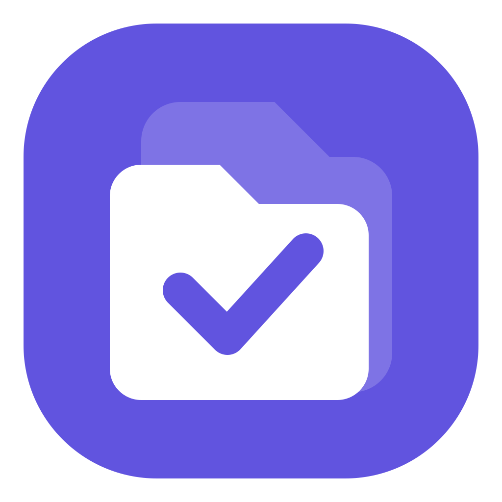

TabTasks
Turn a webpage into your next action.
把网页收成下一步行动。
TabPlugins · 浏览器里的小工具
Capture tasks. Save your tabs. Keep your workspace close.
收集待办，保存标签页，让工作留在手边。

Turn a webpage into your next action.
把网页收成下一步行动。

Save your tabs, pause and return.
保存标签页，随时回来继续。